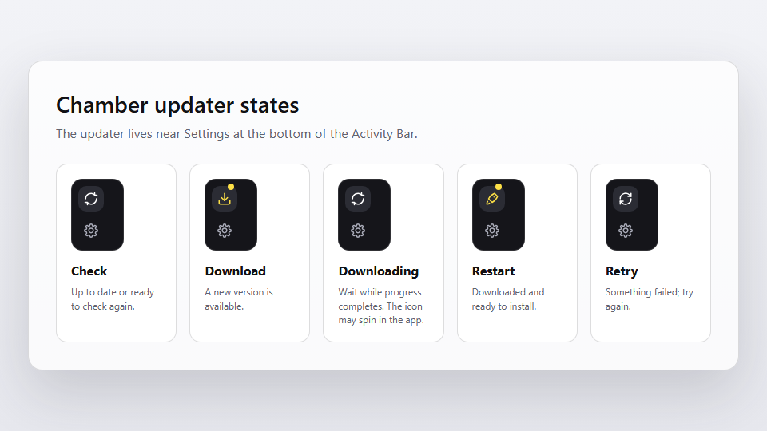

Chamber can check for updates from the Activity Bar. The updater icon tells you
whether the app is current, downloading, ready to restart, or needs another try.
Recognize Chamber and the Activity Bar
The Chamber app mark is a dark square with a white chamber shape. Inside the
app, the left Activity Bar holds Chat, Chatroom, Lens views, the updater, and
Settings. The updater appears near the bottom of that bar.
Chamber app
Use this mark to recognize Chamber on the web, in shortcuts, and in docs.
Chat
Open the current mind's conversation.
Chatroom
Coordinate several minds in one shared conversation.
How Chamber updates work
Chamber checks whether a newer desktop version is available. If there is one,
you can download it from the updater icon and restart Chamber when the download
is ready to install.
1
Check for updates
Click the updater icon to ask Chamber to check again, even when it is already up to date.
2
Download when available
If a new version is available, click the download state and keep Chamber open while it downloads.
3
Restart to install
When the update is ready, save your work and click the restart state to finish installing.
Updater icon states
The updater uses the same icon language as Chamber's Activity Bar. These icons
are small in the app, so use the labels below to know what each state means.

The updater sits above Settings. A yellow dot means a download or restart needs attention.
Check
Chamber is up to date, checking, or ready for a manual check.
Download
A new Chamber version is available. Click to download it.
Restart
The update is downloaded. Click when you are ready to restart and install.
Retry
An update check or download had a problem. Click to try again.
Busy
Checking, downloading, or installing is in progress. Wait until it finishes.
Yellow dot
Something needs your attention, such as a download or restart.
Install updates safely
Updates can require Chamber to restart. Before clicking restart, pause or stop
long-running mind work, finish any approval prompt, and save anything important
outside Chamber.
Wait for active mind replies to finish if you need the answer.
Stop work that can be safely restarted later.
Do not approve new tool requests while you are preparing to restart.
After Chamber reopens, continue from your mind or conversation history.
If an update fails
Most update problems are temporary. Try a manual check again, confirm you are
online, and make sure your computer allows Chamber to install updates.
If the icon shows retry, click it once after checking your connection.
If downloading stalls, leave Chamber open for a few minutes before retrying.
If installation fails, quit Chamber fully and open it again.
If the updater still fails, download the latest installer from the official release page.
Related guides
These guides explain nearby setup and troubleshooting topics.